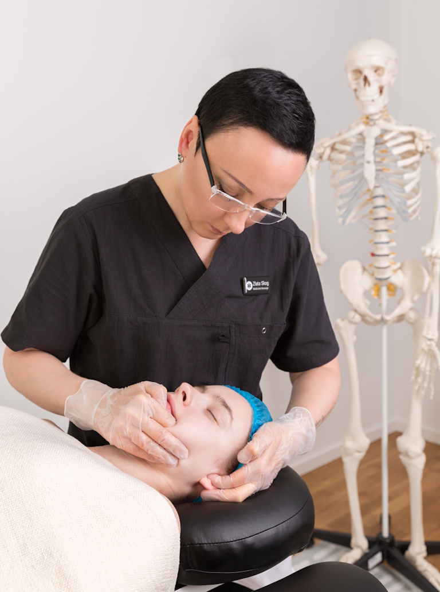

Om Terapeuten
Kvalifikationer
- Br.cert. manuell terapeut
- Br.cert. medicinsk laser terapeut i Sverige
- Leg. läkare i Ukraina
Med lång erfarenhet inom både traditionell och modern manuell terapi arbetar Dr. Zlata Skog med att lindra smärta, förbättra rörlighet och öka livskvaliteten för sina patienter. Hennes arbetssätt bygger på en kombination av vetenskapligt beprövade metoder och en personlig, lyhörd behandling.
Hon erbjuder skräddarsydda behandlingsplaner för allt från spänningshuvudvärk och käkproblem till rygg-, nack- och ledbesvär. I sitt arbete använder hon bland annat avancerade manuella tekniker och fysioterapeutisk apparatur för att uppnå bästa möjliga resultat.
Dr. Zlata brinner för att hjälpa varje patient att nå sina mål och återfå ett liv utan smärta - på ett naturligt och hållbart sätt.